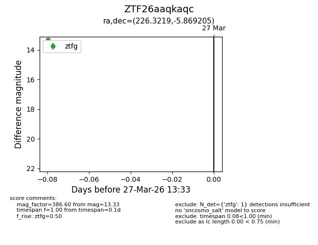
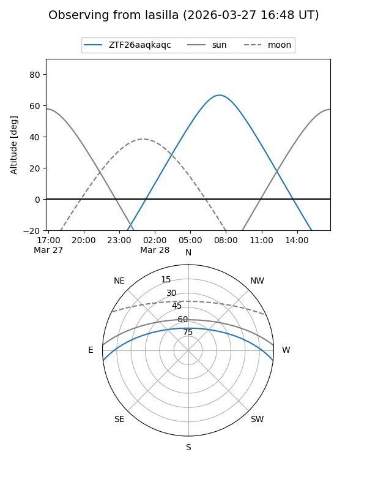
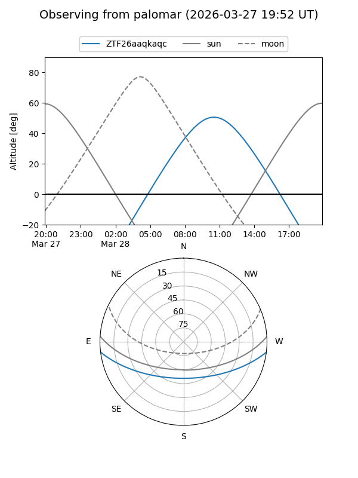

ZTF26aaqkaqc
Target ZTF26aaqkaqc at 2026-03-27 13:35
Aliases and brokers:
FINK: link
Lasair: link
ALeRCE: link
alt names
ZTF26aaqkaqc (ztf,fink_ztf)
Coordinates:
equatorial (ra, dec) = 226.3219,-5.86921
equatorial (HMS+DMS) = 15:05:17.25,-05:52:09.14
galactic (l, b) = (352.3743,+43.78470)
Flags:
Photometry:
last ztfg=13.33
1 ztfg detections
Lightcurve

Visibility


Additional plots